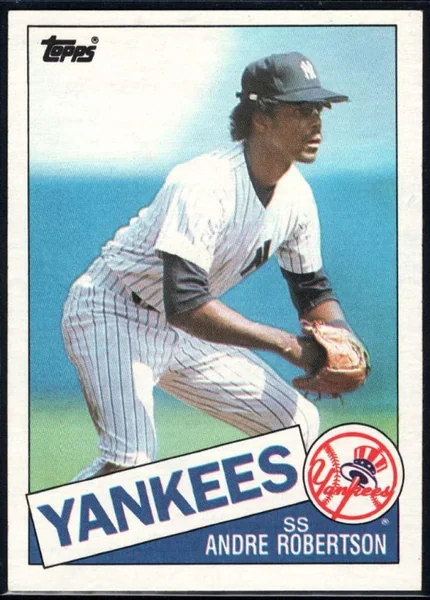

Andre Robertson
Career Highlights & Facts
(Facts are AI-generated and may require verification)
- Selected in the 4th round of the 1979 amateur draft.
- Primary defensive role involved patrolling the middle infield.
- Involved in a 1986 trade that brought an outfielder and an infielder to the Bronx.
Would you like to find out more about Andre Robertson?
Career Totals
| WAR | AB | H | HR | BA | R | RBI | SB | OBP | SLG | OPS | OPS+ |
|---|---|---|---|---|---|---|---|---|---|---|---|
| 0.8 | 724 | 182 | 5 | .251 | 80 | 54 | 4 | .279 | .327 | .607 | 69 |
Statistics via Baseball-Reference.com
The Original Clue